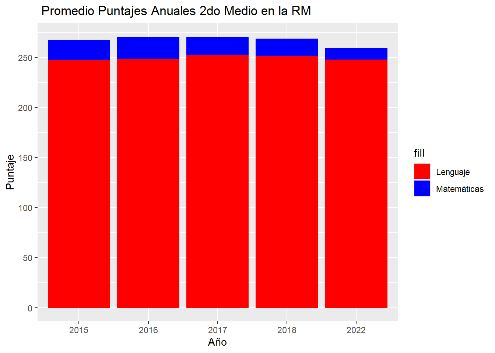
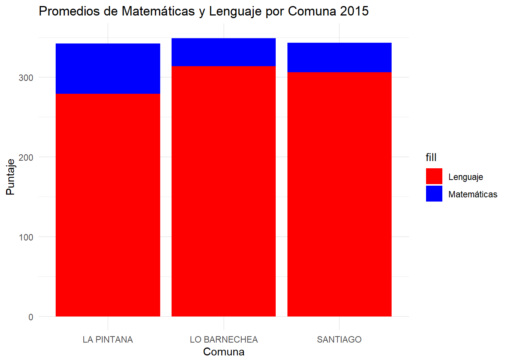
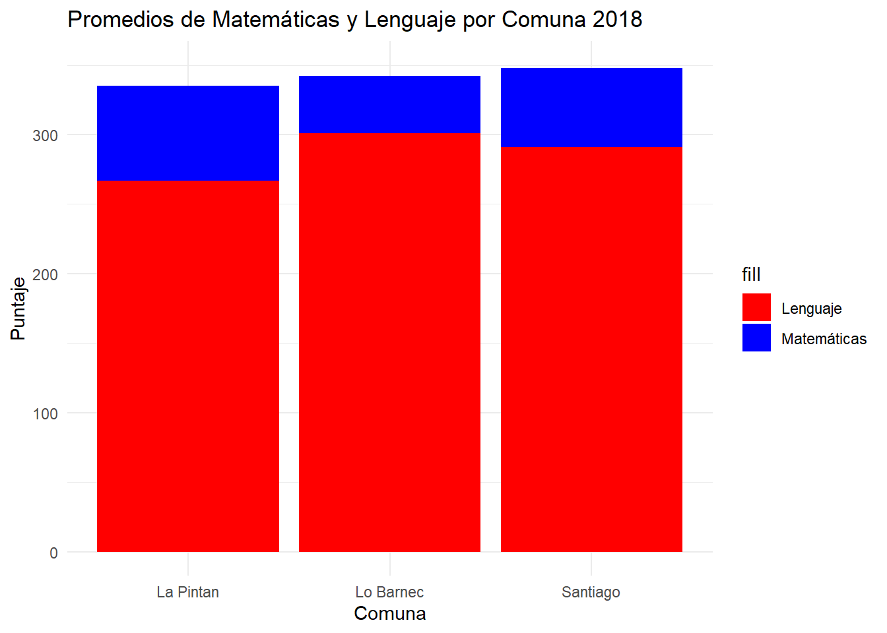
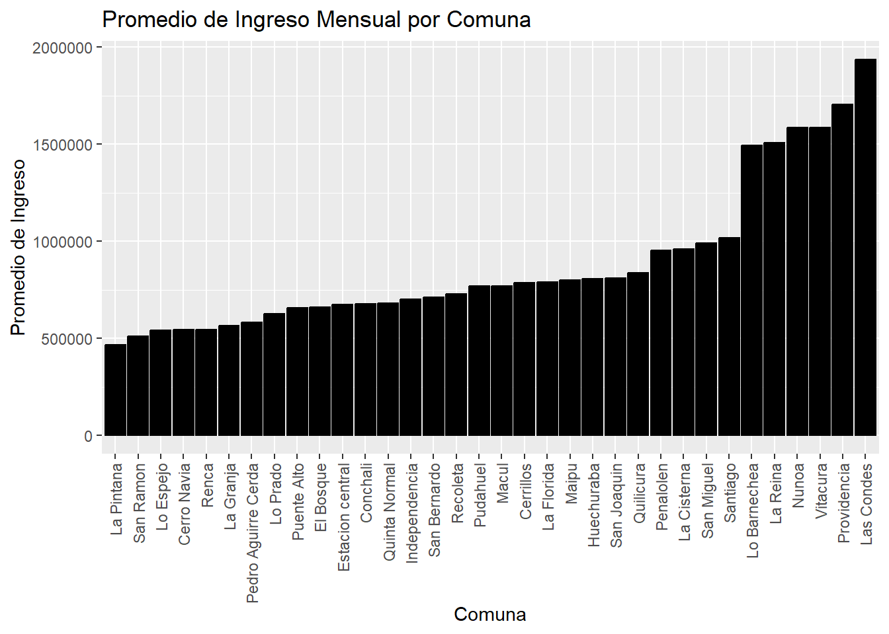
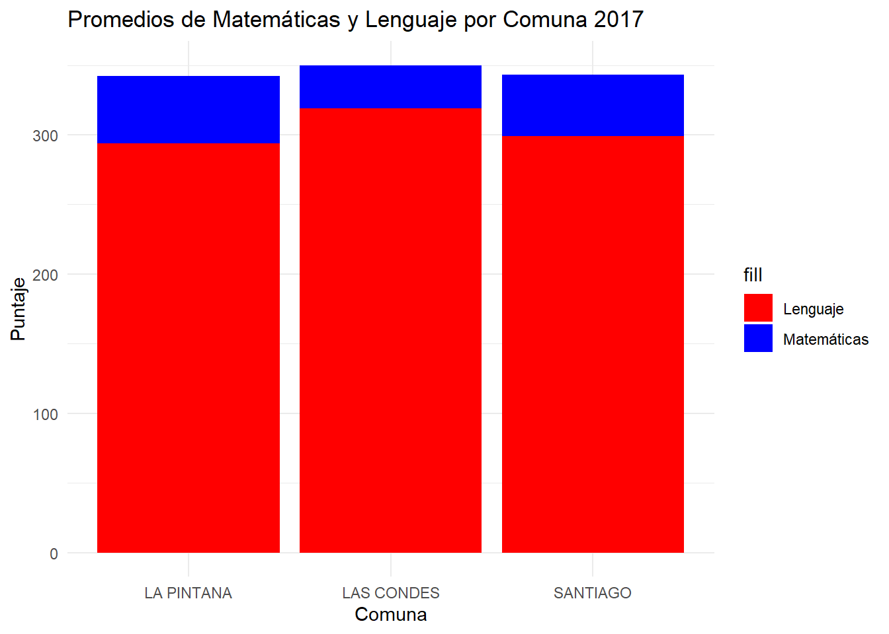

| var | mean | sd | range |
|---|---|---|---|
| promedio_lenguaje | 252.4174 | 29.48355 | 169 (169-338) |
| promedio_matematica | 270.3620 | 45.84432 | 244 (149-393) |
Caída del Simce 2do Medio en la Región Metropolitana: Posibles Causas y Soluciones para la educación en Chile
Introducción
El Sistema de Medición de la Calidad de la Educación, o más conocido como SIMCE, es un instrumento para dar a conocer el rendimiento académico escolar en nuestro país, este se realiza todos los años en cursos específicos, siendo 2do medio el último grado en rendirlo. Este a partir del año 2015 denotó un aumento año a año en su promedio de las pruebas de Lectura y Matemática, llegando así al 2017 con un puntaje de 251 y 270 respectivamente. Luego de esto el último SIMCE del 2018 dejó ver bajas en estos puntajes, llegando, por ejemplo, a tener un 50% de alumnos cursantes con una Lectura insuficiente (ver Sylvia Eyzaguirre et al. 2020) y luego de una pandemia y un estallido social en que no se realizaron estas pruebas, el pasado 2022 dio nuevamente resultados más bajos de lo esperado (pensando en la anterior alza) llegando a 247 en Lectura y 259 en Matemáticas, lo que a pesar de no ser una baja tan significativa, es preocupante el decenso del puntaje sobre todo en estos cursos ya que se encuentran a 2 años de rendir la PSU o elegir una alternativa profesional, siendo un tema crítico evaluar las razones para pronta solución y mejora en la educacion chilena.
En esta investigación se busca entonces indagar sobre las posibles causas de esta caída en los puntajes, mirando tanto las políticas educacionales (ver Víctor Castillo Riquelme et al. 2016) como contexto social y/o económico que afectan directamente en los resultados (ver Orlando Mella 2016). Así entonces decidí realizar una investigación con diseño transversal, recolectando datos de los puntajes de cada año con una muestra de estudiantes de la Región Metropolitana cursantes de 2do medio, decidí realizarlo con datos de este curso en específico por la importancia que tiene para la base de la educación superior y asi entender la problemática desde dentro para crear en un futuro mejores políticas educativas. Todo esto teniendo en cuenta que “el SIMCE no es causante de la desigualdad y la estigmatización social presente en el sistema educativo chileno, y que lo correcto es mantener la prueba y optimizar las situaciones de los colegios menos favorecidos para que logren subir su desempeño.” (ver Cristian Cabalín et al. 2019)
Desarrollo
La caída del sistema SIMCE, al menos en la Región Metropolitana, comenzó el 2018 y aunque fue con pocos puntos de diferencia, marco un antes y un despues ya que no se han podido volver a obtener puntajes mas altos. Es más, hasta antes del 2018 los puntajes iban en subida, y luego de un contexto de tensión social, estallido social y luego pandemia los estudiantes han comenzado a bajar su promedio en estas pruebas de medición.
| var | mean | sd | range |
|---|---|---|---|
| promedio_lenguaje | 250.8853 | 25.40079 | 142 (179-321) |
| promedio_matematica | 268.6750 | 44.20240 | 226 (176-402) |
| var | mean | sd | range |
|---|---|---|---|
| promedio_lenguaje | 247.5464 | 27.26089 | 323 (0-323) |
| promedio_matematica | 259.5644 | 40.48911 | 387 (0-387) |
Primeramente en el 2018 ya se estaban viviendo tensiones sociales en temas políticos y económicos del país, habiendo marchas y quejas por el aumento en la desigualdad y del costo de vida, esta tensión no se vivió tan solo en la calle, si no que existia también la movilización secundaria y, en varias oportunidades, estas movilizaciones incluian paro/tomas de establecimientosy la famosa “cimarra” para la asistencia a marchas, por lo que el foco del estudiantado fue desviado.
Esto terminó por explotar el año 2019 desencadenando un estallido social, en dónde debido a su magnitud se paralizaron clases, pruebas e incluso el SIMCE.

En este gráfico se puede notar como anterior a esto el puntaje en los estudiantes se encontraba en alza año a año, hasta llegar al 2018. Luego de esto, por el estallido social y luego por la pandemia del Covid-19 las pruebas fueron suspendidas, por lo que en estos años no existe cifra a comparar, pero esta más que claro que influyeron de manera negativa en los alumnos ya que al retomar la prueba el año 2022 los puntajes volvieron a bajar.
Es interesante además notar la brecha que existe entre los promedios de Lenguaje y Matemáticas, siendo esta segunda prueba mejor rendida que la de Lectura, basada en la comprensión lectora de los estudiantes. Esto es algo bastante problemático ya que además como relata (Sylvia Eyzaguirre et al. 2020) la mitad de los estudiantes esta en el rango de Lectura Insuficiente, lo que significa que la comprensión lectora básica en los alumnos de 2do medio es deficiente. Esto nos lleva a otra problemática basandonos en las pocas herrramientas que poseen los estudiantes para enfrentarse a un texto de lectura y su análisis, ya que una buena lectura es necesaria para toda la vida sea cual sea el rumbo profesional que tome la persona. Para esto una posible solución debe ser implementar talleres de lectura para todos los cursos, incluyendo planes anuales desde cursos más pequeños para mejorar las habilidades lectoras.
Además con la pandemia, aparte de la alta deserción escolar, se incorporaron probemas como la mala alimentación en los estudiantes, pérdida de habilidades sociales y cognitivas y aumento en la brecha de aprendizaje (ver Sylvia Eyzaguirre et al. 2020), todo esto se relaciona directamente con una baja en los puntajes, presentando dificultades al volver precencialmente, a pesar que se hizo de manera gradual.
Tampoco podemos esperar que los estudiantes vuelvan con el mismo desempeño escolar luego de estas problemáticas en sus casas durante 2 años en cuarentena, pero si se pueden implementar medidas de apoyo mayores, y tener siempre un Plan B para en casos de crisis sepamos como actuar y apoyar a nuestros estudiantes, ya que en estos dos casos nombrados ni los colegios ni el gobierno supieron actuar rápido por no tener medidas preventivas o planes de acción.
Podemos observar además una diferencia notoria por comuna en los puntajes anuales, aquí tomaremos como ejemplos el año 2015 y el 2018. Esto denota que efectivamente, las comunas con menos ingresos tienen un rendimiento más bajo que comunas como Lo Barnechea que se caracteriza por su alto ingreso en la población y una mejor calidad de vida.


Lo bueno es que ya, para el año 2018 los niveles de desigualdad bajan, cerrandose un poco más a brecha comunales a menos en los puntajes de matemáticas. De todas formas el que hayan diferencias por comuna es preocupante, ya que la educación no debería ser un privilegio.
De todas formas, sigue siendo lamentable la brecha que existe entre los promedios de lenguaje y de matemáticas, preocupa el bajo rendimiento de los estudiantes en una prueba que mide comprensión lectora, no hay grandes medidas aún de parte del gobierno para su reparación.
En el siguente gráfico podemos apreciar la desigualdad de ingresos por comuna, con datos sacados desde la Encuesta Suplementaria de Ingresos del INE el año 2022. La idea es evaluar si efectivamente el ingreso es un derminante en el puntaje de los alumnos de 2do Medio.
ggplot(promedio_ingreso, aes(x = reorder(comuna, promedio_ingreso), y = promedio_ingreso)) +
geom_bar(stat = "identity", fill = "black", color = "black") +
labs(title = "Promedio de Ingreso Mensual por Comuna",
x = "Comuna",
y = "Promedio de Ingreso") +
theme(axis.text.x = element_text(angle = 90, hjust = 1, vjust = 0.5))

Aquí podemos darnos cuenta que efectivamente la diferencia entre las comunas tiene una incidencia directa en la altura de los punataes.
Conclusión
Podemos ver entonces con los resultados del sistema SIMCE que los estudiantes de 2do Medio en la Región Metropolitana han bajado año a año su rendimiento escolar por razones mayoritariamente contextuales/sociales, como fueron la pandemia y el estallido social del 2019. Esto nos lleva a pensar que son necesarias urgentes reformas educativas, ya que, a tan solo 2 años de la educación superior, no es posible que los alumnos esten aprendiendo cada vez menos. Y, tomando en cuenta que las dificultades academicas se presentan aún más en los colegios municipales y sectores de menos recursos (ver Orlando Mella 2016) es importante buscar soluciones para disminuir la brecha de distintos tipos de colegios y comunas en la región. Para esto son necesarias políticas más alla del ámbito educacional, invirtiendo más recursos para el contexto social de las personas y así de los estudiantes.
References
Cristian Cabalín, Cristian Cabalin, Loreto Montero, Loreto Montero, Loreto Montero, Loreto Montero, Camila Cárdenas, and Camila Cárdenas. 2019. “Discursos Mediáticos Sobre La Educación: El Caso de Las Pruebas Estandarizadas En Chile.” Cuadernos.info, no. 44 (April): 135–54. https://doi.org/10.7764/cdi.44.1429.
Orlando Mella. 2016. “12 años de Reforma Educacional En Chile. Algunas Consideraciones En Torno a Sus Efectos Sobre La Reducción de La Inequidad.” REICE. Revista Iberoamericana Sobre Calidad, Eficacia y Cambio En Educación 1 (1). https://doi.org/10.15366/reice2003.1.1.001.
Sylvia Eyzaguirre, Sylvia Eyzaguirre, Carmen Le Foulon, Carmen Le Foulon, Valentina Salvatierra, and Valentina Salvatierra. 2020. “Educación En Tiempos de Pandemia: Antecedentes y Recomendaciones Para La Discusión En Chile.” Estudios públicos, no. 159 (August): 111–80. https://doi.org/10.38178/07183089/1430200722.
Víctor Castillo Riquelme, Víctor Castillo Riquelme, Juan Escalona Bustos, and Juan Escalona Bustos. 2016. “Medición de La Integralidad Educativa: Una Aproximación Desde Los Nuevos Indicadores de Calidad Escolar.” Revista Iberoamericana de Evaluación Educativa 9 (2): 149–65. https://doi.org/10.15366/riee2016.9.2.008.